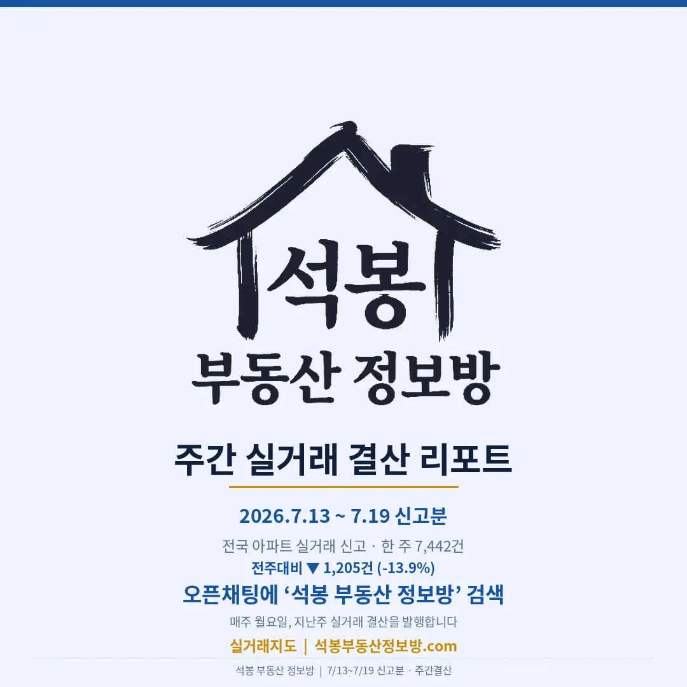
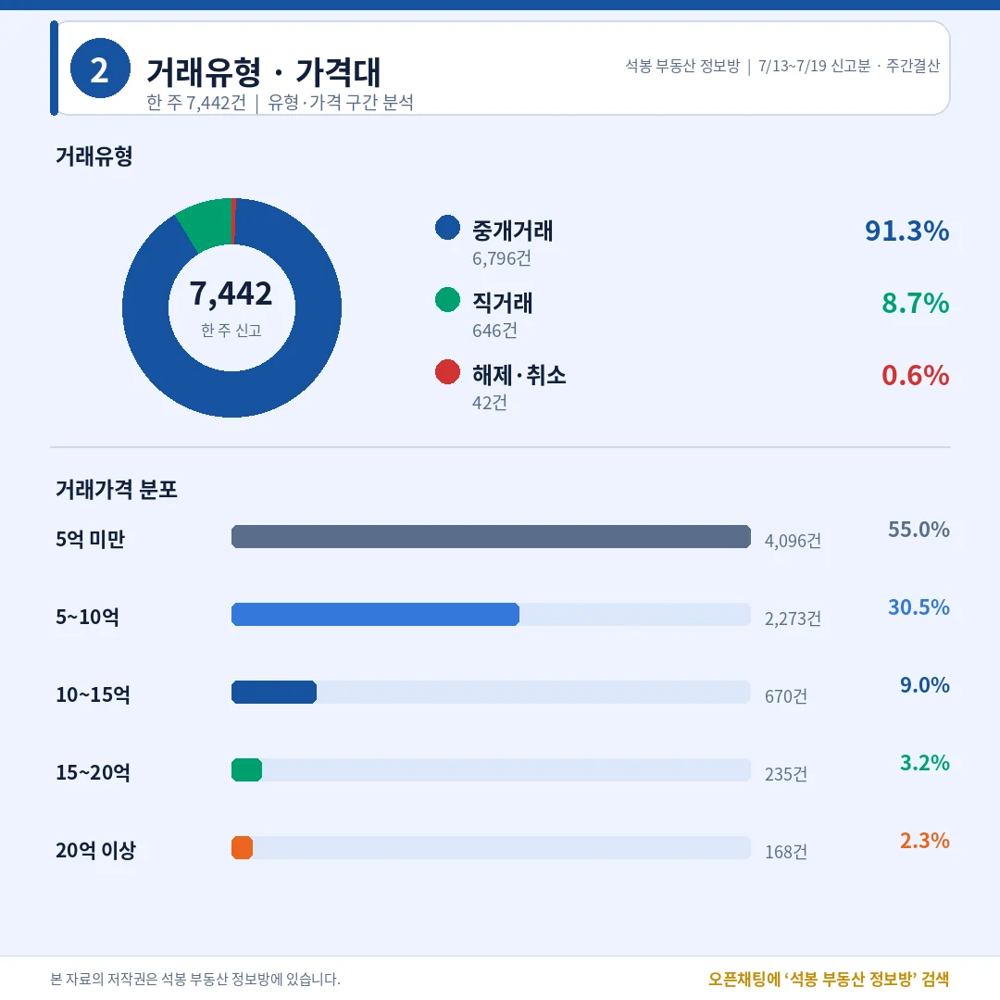
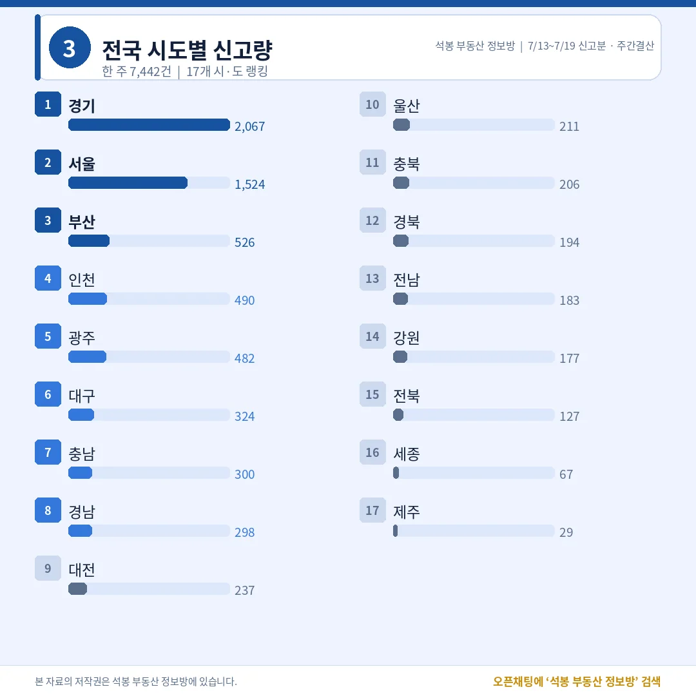
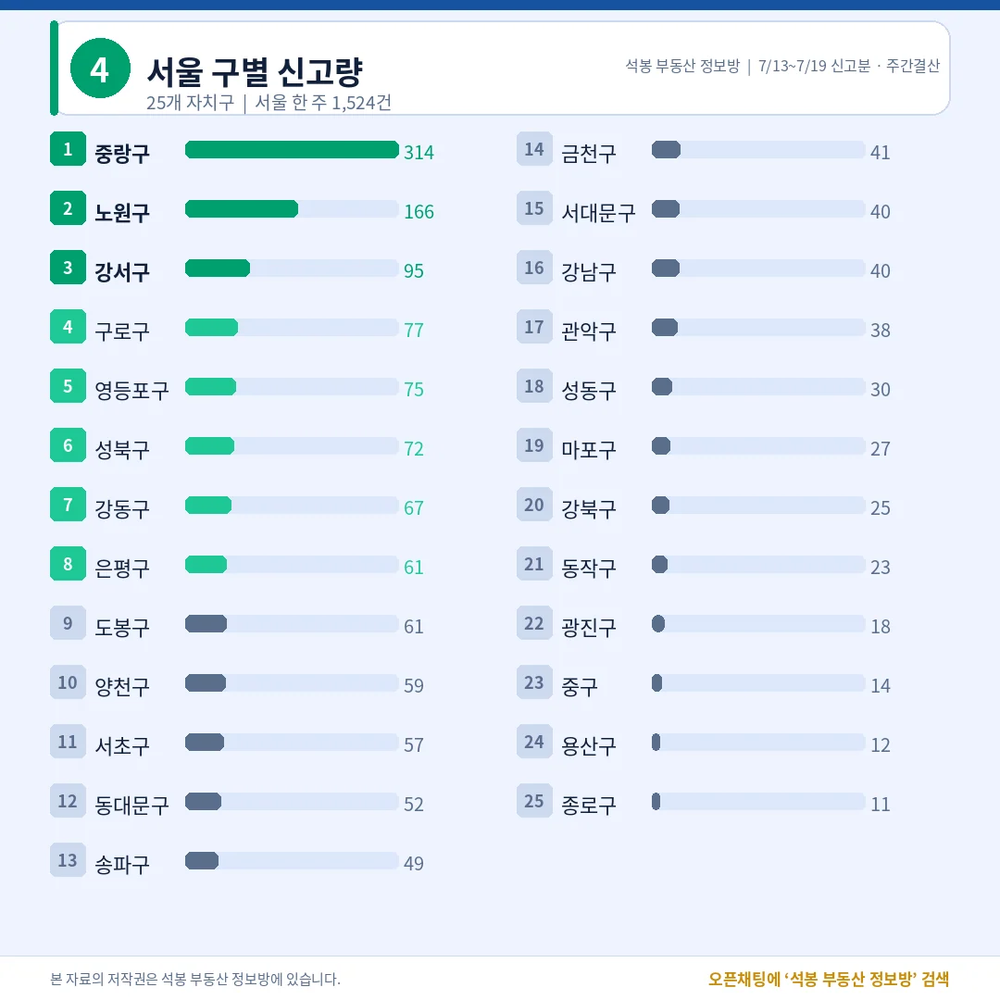
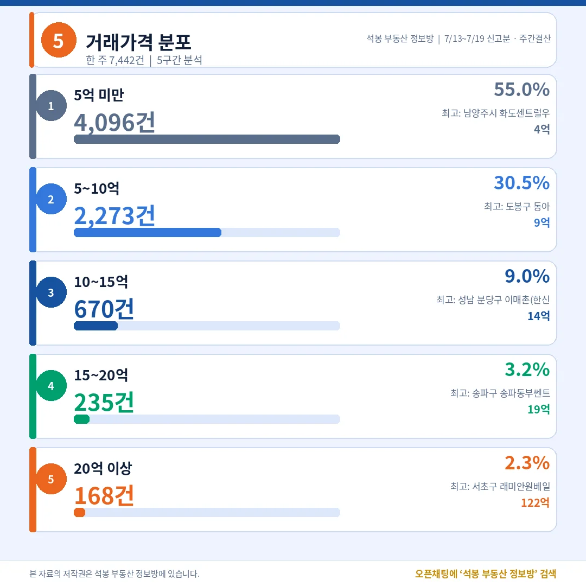
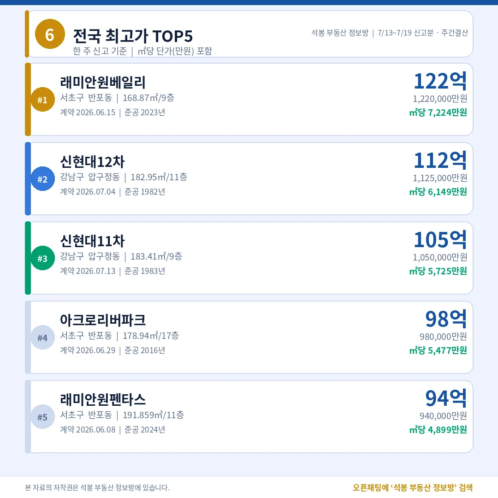
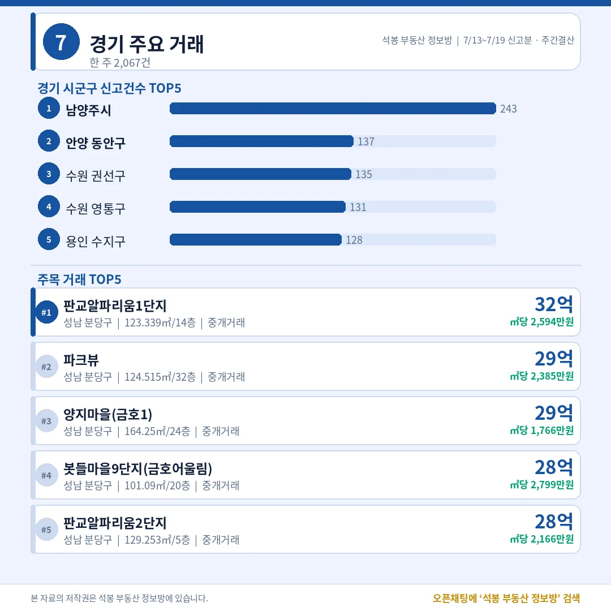
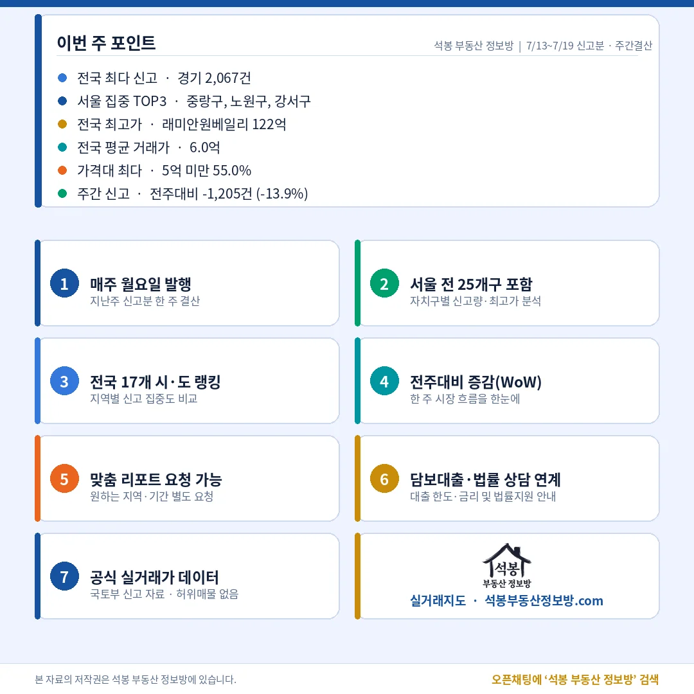

지난주(7월 13일~19일) 전국 아파트 실거래 신고는 7,442건이었습니다. 전주보다 1,205건(13.9%) 줄었습니다. 서울 구별 1위는 중랑구 314건인데, 지난 15일 데일리 리포트 '중랑구 291건의 진실'에서 짚어드렸던 세이지움 공공기관 일괄매입이 주간 집계에 그대로 얹힌 숫자입니다. 이 물량을 빼고 보면 서울의 실질 1위는 노원구입니다. 가격 상단은 달랐습니다. 전국 최고가는 반포 래미안원베일리 122억, 분당 구축 대형 평형에는 30억 안팎 거래가 줄줄이 찍혔습니다.
지난주 시장 한눈에: 중개거래 91.3%, 몸통은 여전히 5억 미만

7,442건 가운데 중개거래가 6,796건(91.3%)이었고, 직거래(중개사 없이 당사자끼리 한 거래)는 646건(8.7%)이었습니다. 해제·취소는 42건, 비율로는 0.6%에 그쳤습니다. 다만 직거래 비율이 평소(최근 데일리 기준 6% 안팎)보다 높은데, 15일 데일리에서 설명드렸던 중랑구 세이지움 일괄매입 278건이 주간 집계에 포함된 영향입니다. 이 물량을 빼고 다시 계산하면 직거래 비중은 5.1%(368건÷7,164건)로 평소 수준입니다.
가격대 분포는 5억 미만 4,096건(55.0%), 5~10억 2,273건(30.5%)이었습니다. 두 구간을 합치면 85.5%, 열 건 중 여덟 건 이상이 10억 아래에서 거래됐다는 뜻입니다. 10~15억은 670건(9.0%), 15~20억 235건(3.2%), 20억 이상은 168건(2.3%)이었고 전국 평균 거래가는 6.0억이었습니다. 뉴스 헤드라인은 초고가가 차지해도, 시장의 몸통은 지난주에도 중저가였습니다.
전국 어디서 거래됐나: 경기 2,067건, 광주가 인천을 위협

시도별 1위는 경기 2,067건, 2위는 서울 1,524건입니다. 수도권(서울·경기·인천 4,081건) 비중은 54.8%로 절반을 넘겼습니다. 3위 부산(526건) 다음이 눈에 띕니다. 인천이 490건인데 광주가 482건으로 바짝 붙었습니다. 인구 규모를 생각하면 광주의 신고량이 이례적으로 두터웠던 한 주입니다. 대구 324건, 충남 300건, 경남 298건이 뒤를 이었고, 세종(67건)과 제주(29건)는 지난주에도 조용했습니다.
서울 자치구별: 중랑 314건은 그 일괄매입, 실질 1위는 노원

서울 한 주 1,524건의 구별 1위는 중랑구 314건입니다. 낯익은 숫자죠. 15일 데일리에서 다뤘던 묵동 세이지움태릉입구역의 공공기관 일괄매입 278건(중랑구의 88.5%)이 주간 집계에도 그대로 올라온 겁니다. 법인이 보유한 신축 소형(전용 18~39㎡, 2~4억대)을 공공기관이 통째로 사들여 하루에 신고한 매입임대(공공기관이 기존 주택을 사서 임대주택으로 공급하는 방식) 물량이라 시장 열기와는 무관합니다. 주간으로 합산되면서 서울 다섯 건 중 한 건이 이 단지에서 나온 것처럼 보이게 됐을 뿐입니다.
이 물량을 걷어내면 중랑구의 순수 거래는 36건, 지난주 서울의 실질 1위는 노원구 166건입니다. 이어 강서구 95건, 구로구 77건, 영등포구 75건, 성북구 72건 순으로 중저가 실수요 지역이 상위권을 채웠습니다. 반면 강남권은 수량에서 존재감이 옅었습니다. 서초구 57건(11위), 강남구는 40건으로 16위에 머물렀습니다. 거래량은 노원·강서가, 가격은 강남·서초가 가져간 구도인데, 이 대비는 아래 최고가 카드에서 더 선명해집니다.
가격대별로 보면: 구간마다 표정이 다르다

구간별 최고가를 짚어 보면 시장의 층이 보입니다. 5~10억 구간 최고는 도봉구 동아(9억), 10~15억 구간은 성남 분당구 이매촌 한신(14억)이었습니다. 그리고 20억 이상 168건의 꼭대기에 래미안원베일리 122억이 있습니다. 같은 한 주 안에서 4억짜리 남양주 아파트와 122억짜리 반포 아파트가 함께 신고됐습니다. 평균(6.0억)이라는 숫자 하나로는 다 담기지 않는 폭입니다.
지난주 최고가: 래미안원베일리 122억, TOP5 전부 강남·서초

전국 최고가는 서초구 반포동 래미안원베일리 전용 168.87㎡(9층), 122억이었습니다. ㎡당 7,224만원으로 단가에서도 1위입니다. 2023년 준공한 신축 대장 단지가 가격표의 최상단을 다시 찍었습니다.
2위와 3위는 압구정동 재건축 형제입니다. 신현대12차 112억(전용 182.95㎡, 1982년 준공), 신현대11차 105억(전용 183.41㎡, 1983년 준공). 만 44년 안팎의 구축이 100억을 넘겼으니, 압구정 재건축(낡은 아파트를 헐고 새로 짓는 사업) 기대감의 눈높이가 그대로 읽힙니다. 4위 아크로리버파크 98억(2016년 준공), 5위 래미안원펜타스 94억(2024년 준공)까지 다섯 건 모두 강남구와 서초구, 그중 셋이 반포동입니다. 3년차 신축과 44년 재건축이 나란히 최상단을 채웠다는 점이 지난주 상단 시장의 요약입니다.
주목 지역: 분당 구축의 한 주, 부산은 초고층이 상단

경기(2,067건)에서는 남양주가 243건으로 1위, 안양 동안구 137건, 수원 권선구 135건, 수원 영통구 131건, 용인 수지구 128건 순이었습니다. 그런데 금액 상단은 전부 한 곳입니다. 경기 주목 거래 TOP5가 모두 성남 분당구였습니다. 판교알파리움1단지 32억, 파크뷰 29억, 양지마을(금호1) 29억, 봇들마을9단지(금호어울림) 28억, 판교알파리움2단지 28억. 판교 신축급과 1기 신도시 정비 기대가 걸린 분당 구축 대형 평형에 뭉칫돈이 움직인 한 주였습니다. 부산(526건)은 부산진구 71건, 해운대구 67건, 북구 56건 순이었고, 최고가는 남구 용호동 초고층 더블유 18억(64층)이었습니다. 더블유 17억, 더샵센텀파크1차·레이카운티(2단지)·해운대 I PARK 각 15억까지, 부산 상단은 초고층과 센텀·해운대권이 채웠습니다.
이번 주 인사이트

지난주 서울 거래량 순위는 중랑구가 아니라 노원구로 읽는 게 정확합니다. 일괄매입 278건을 제외한 몸통은 5억 미만 55.0%와 노원·강서·구로 같은 실수요 지역이 이끌었습니다. 총량은 전주보다 13.9% 줄었지만 꼭대기 쪽 온도는 달랐습니다. 래미안원베일리 122억과 신현대 형제(112억·105억)가 반포 신축과 압구정 재건축의 눈높이를 보여줬고, 분당 구축 대형 평형이 경기 상단을 싹쓸이했습니다. 해제는 0.6%로 낮았습니다. 실수요의 몸통과 정비 기대의 꼭대기, 지난주 시장은 이 두 축으로 움직였습니다.
원자료: 국토교통부 실거래가 공개시스템(2026년 7월 13일~19일 신고분) · 편집·제작: 석봉 부동산 정보방 · 본 자료는 정보 제공 목적이며 투자 권유가 아닙니다.